Vibeke Tandberg — overlay proofs
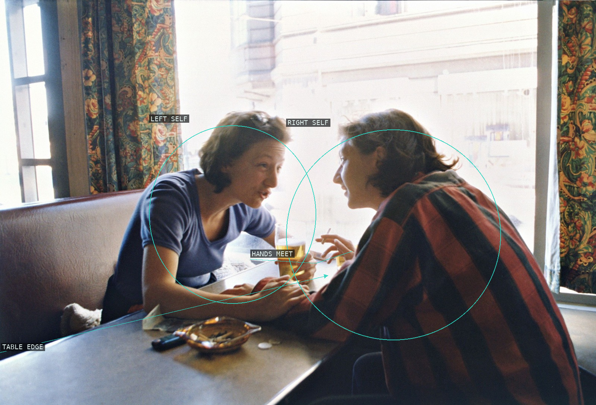
Living Together #15
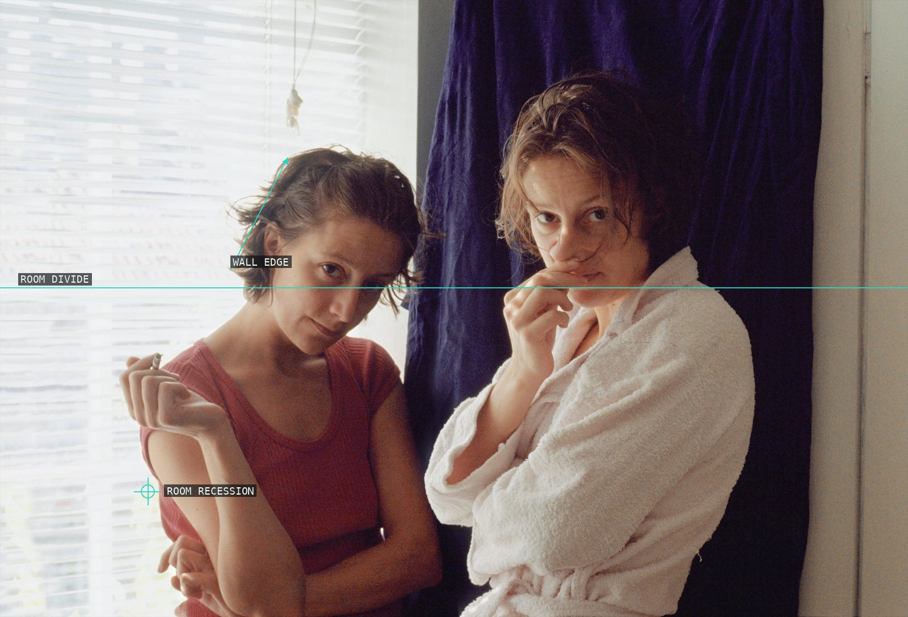
Living Together #12
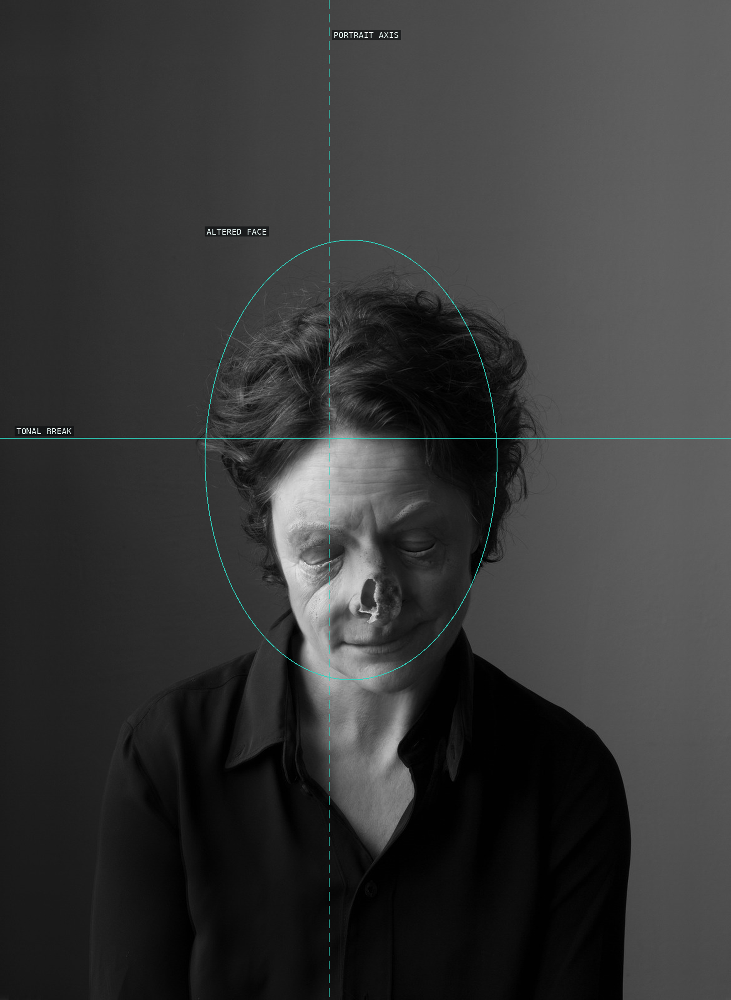
The Lost Ones #3
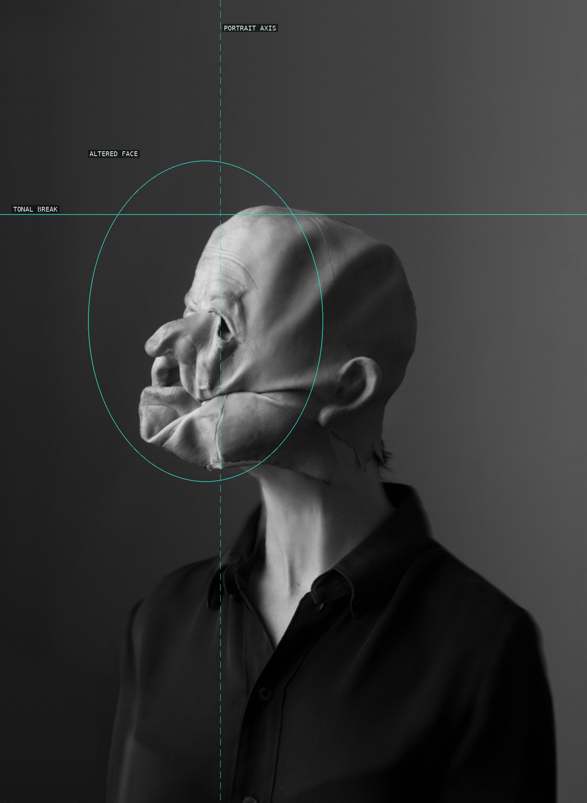
The Lost Ones #7
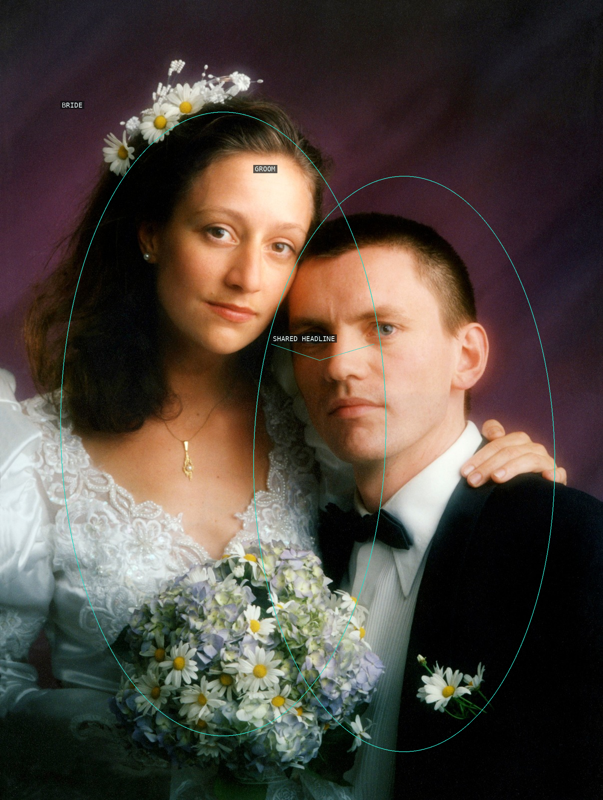
Brud #5
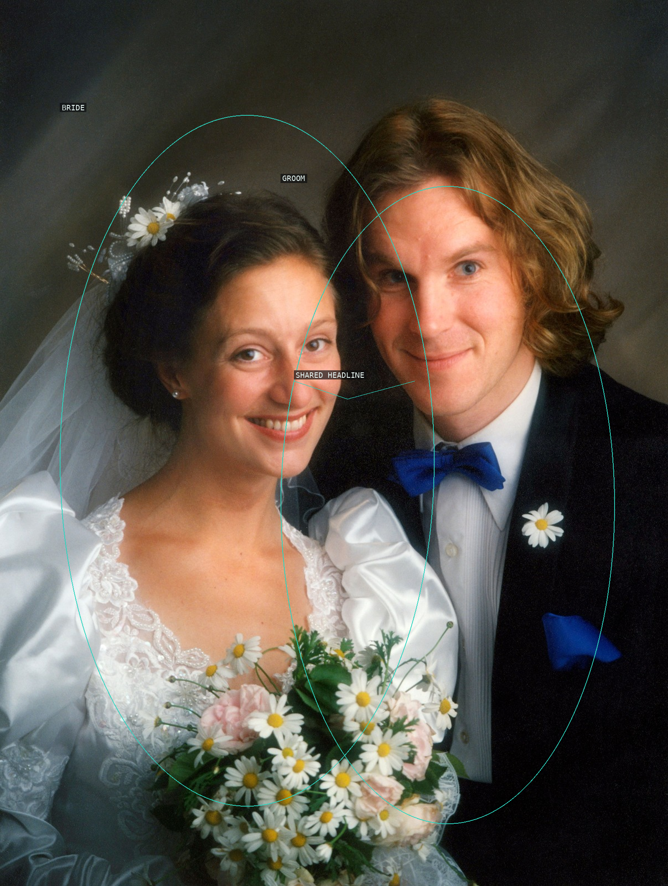
Brud #2
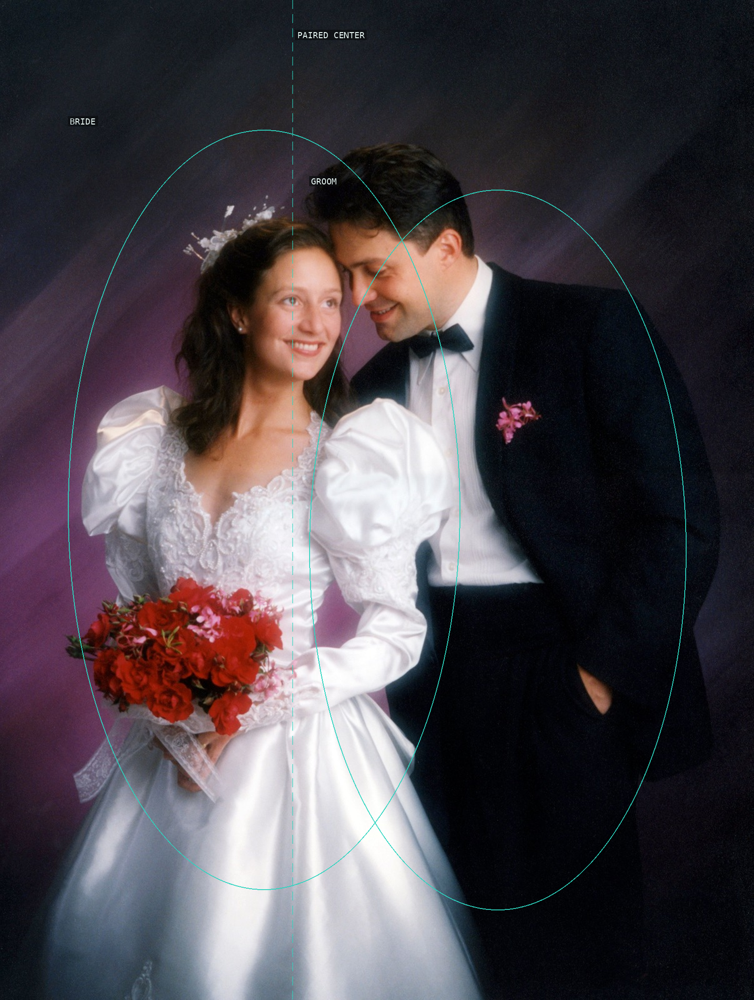
Brud #7
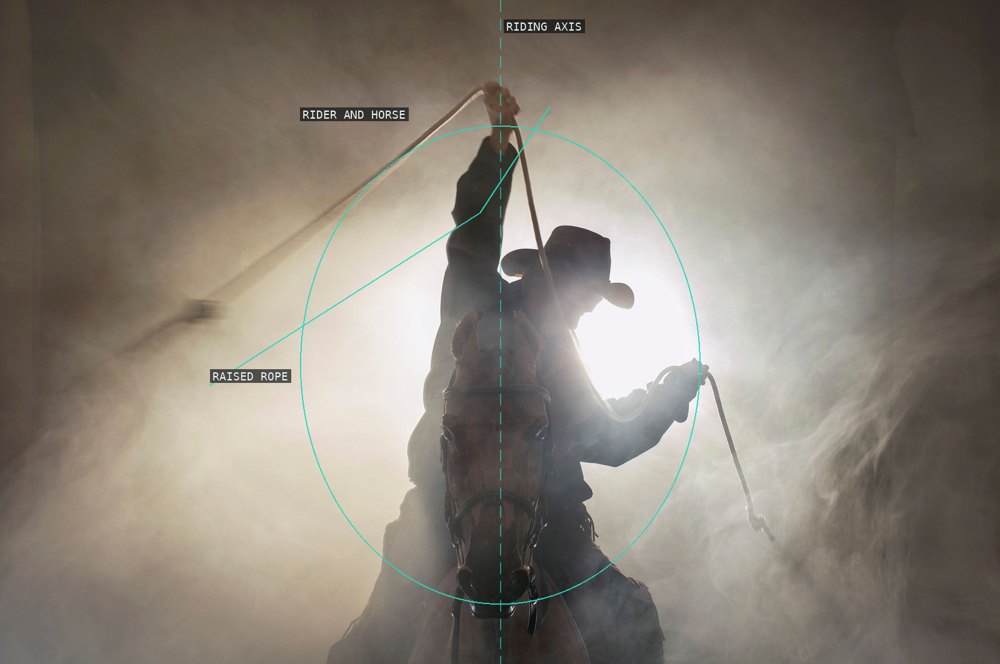
Old Man Cowboy #05
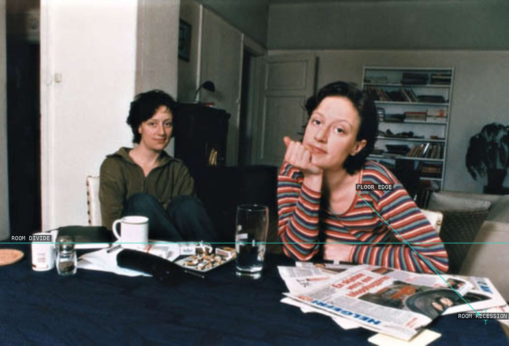
Living Together #4
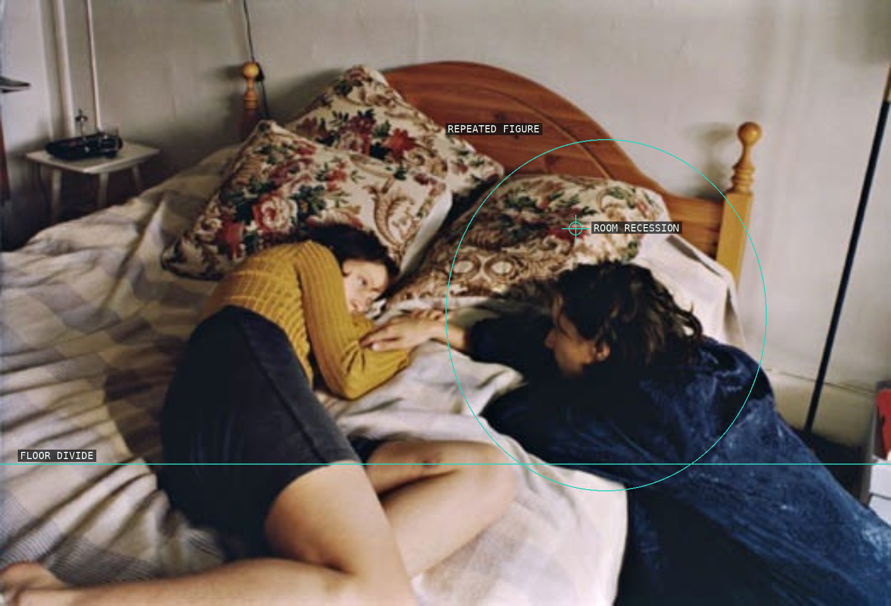
Living Together #6
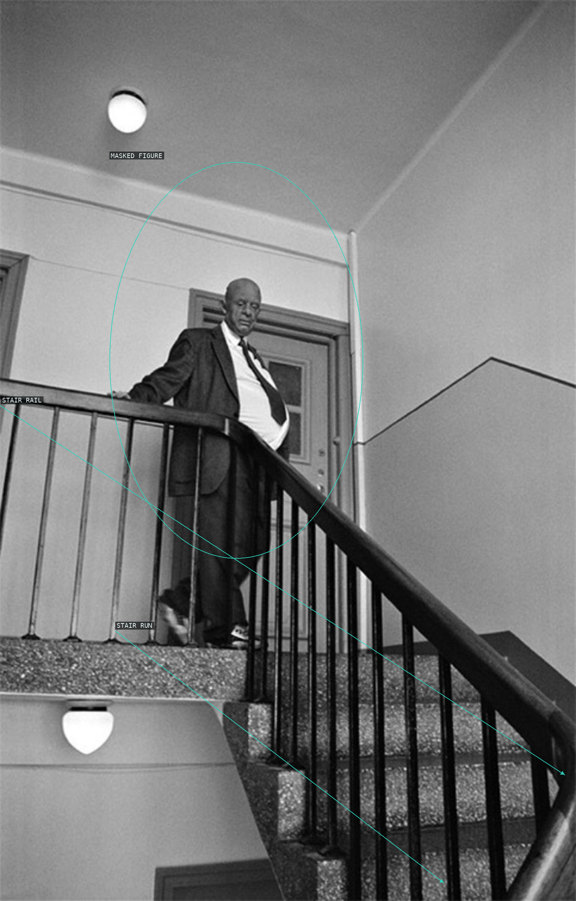
Old Man Staircase #79
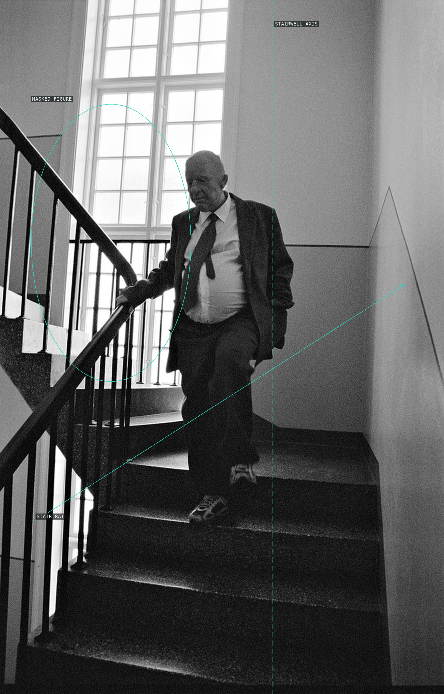
Old Man Staircase #82